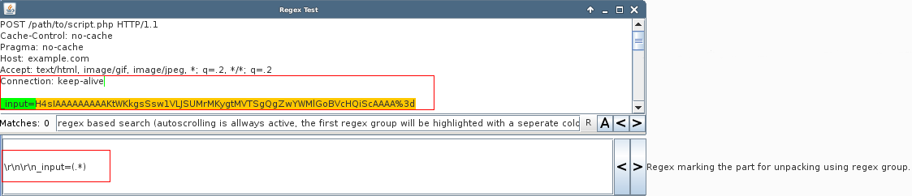
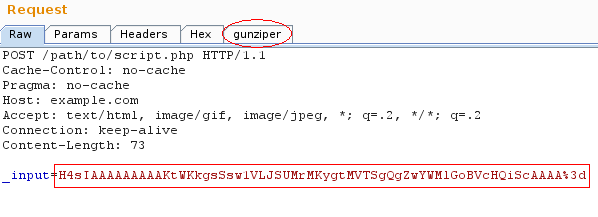
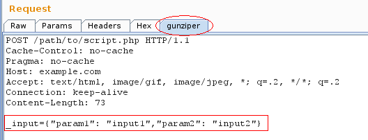

This feature was the starting point of gunziper. It enables you to manual-test requests, where the relevant parts (like parameters and values) are e.g. "hidden" by gzip and base64 encoding (for Java Deserialization, see Java Deserialization). It should be noted, that this feature is not intended to be used with Intruder and Scanner, as it just adds an additional view to Proxy and/or Repeater for live modification. For using this feature with Scanner/Intruder see Request (Un)Packing for Intruder/Scanner.
So the first step would be to send the relevant request to regex test (see Regex Test).
After that, go to the Request Unpacking Tab within the Gunziper Tab and start configuring by activating Request Unpacking:

The next step is to define, which requests are in scope for unpacking (if you want to apply it for every request, just enter a single dot):

If the unpacking of the request modifies the part which is used for the scope, just supply here this modified scope regex. Otherwise, just put the same regex as before.

If the regex defines requests that are NOT in scope, just activate the corresponding checkboxes and every request NOT matching these regexes is being tried to be unpacked:

Now you have to specify, where the string to be unpacked is located, and how it should be unpacked. (NOTE: Regex Groups mark the part to be unpacked.) So in this case, the relevant part is located in the request header within the first parameter named "input", so the regex looks for the Request header and body seperator (\r\n\r\n) and the parameter name (_input) and with the regex group "(.*)" you tell him to unpack everything coming after the parameter:
After that, the last step is to tell Request Unpacker, how the relevant part should be unpacked. So if the content is gziped, base64encoded and URL encoded, the following configuration should be fine (the marked part is processed in the order, the processing strings are supplied):

So to save the work and get it working, push the "Save settings" button go e.g. to the repeater and look for the gunziper tab (you might have to reissue the request to get it to appear):
After selecting it, the content should be unpacked:
